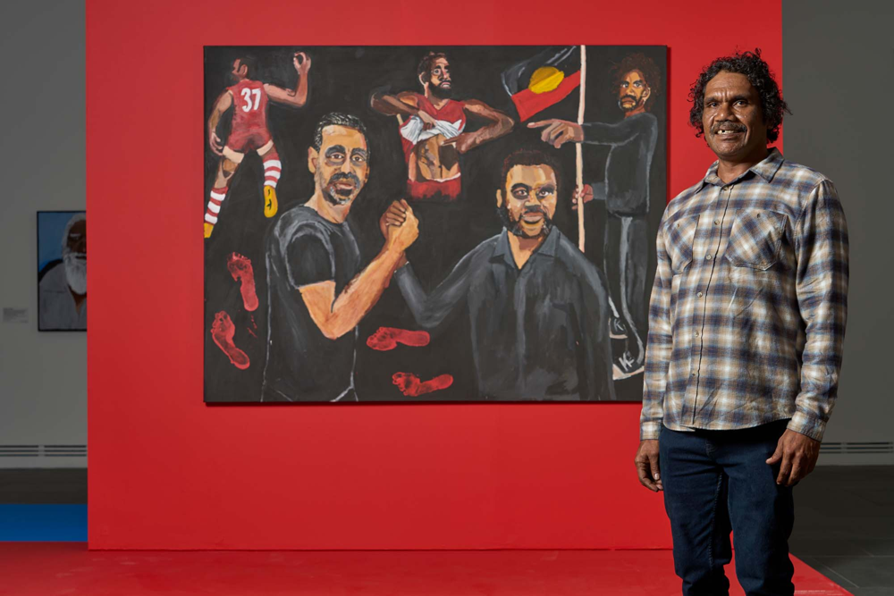

Featured Artworks
Explore Art Locations
Click on the markers to discover Indigenous artworks in their geographical context. Each pin represents an artwork location with cultural and historical significance.
Click on the markers to discover Indigenous artworks in their geographical context. Each pin represents an artwork location with cultural and historical significance.